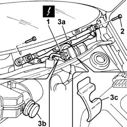

5050B38 windscreen wiper assembly - r+r or repair
- Path
- Procedures > 50 AUXILIARY UNITS > 5050 SCREEN WASHERS AND HEADLAMP WASH/WIPE > 5050B windscreen wash/wipe > 5050B38 windscreen wiper assembly - r+r or repair
- Kind
- repair procedure (removal / refitting; the operation number is the code)
- Applies to
- all engines; all production periods
- Interactive page
- https://sloeber94.github.io/elrnDB-fPnd/en/#/2752917
Applies to: all engines; all production periods
 Removing
Removing
 Refitting
RefittingDisconnect the battery negative terminal.
5050B34 windscreen wiper arm/s complete with blade - r+r
7210E22 R.R. WINDSCREEN BASE TRIM
1. Disconnect the electrical connection.
 | Name | Connector |
|---|---|---|
1 | Windscreen wiper motor | N15 |
2. Undo the retaining bolts.
3. Remove the windscreen wiper assembly (3a), releasing the pin (3b) from the seating (3c) on the bodyshell.

Applies to: all engines; all production periods
Refitting
RemovingFit the windscreen wiper assembly in its seating, fitting the pin in its seating on the body shell.
Tighten the bolts to the specified torque.
 | Fastening | Component | Ø | Value (daNm) |
|---|---|---|---|---|
- | Bolt | WINDSCREEN WIPER ASSEMBLY | M6 | 1.0 |
Connect the electrical connection.
| Name | Connector |
|---|---|---|
- | Windscreen wiper motor | N15 |
7210E22 R.R. WINDSCREEN BASE TRIM
5050B34 windscreen wiper arm/s complete with blade - r+r
Connect the battery negative terminal.